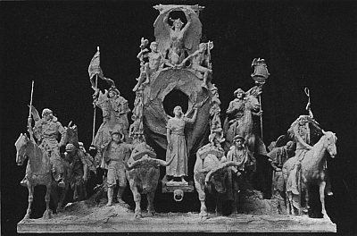

I. The Great Migration to America
The Agencies of American Colonization
The Colonial Peoples
The Process of Colonization
II. Colonial Agriculture, Industry, and Commerce
The Land and the Westward Movement
Industrial and Commercial Development
III. Social and Political Progress
The Leadership of the Churches
Schools and Colleges
The Colonial Press
The Evolution in Political Institutions
IV. The Development of Colonial Nationalism
Relations with the Indians and the French
The Effects of Warfare on the Colonies
Colonial Relations with the British Government
Summary of Colonial Period
PART II. CONFLICT AND INDEPENDENCE
V. The New Course in British Imperial Policy
George III and His System
George III's Ministers and Their Colonial Policies
Colonial Resistance Forces Repeal
Resumption of British Revenue and Commercial Policies
Renewed Resistance in America
Retaliation by the British Government
From Reform to Revolution in America
VI. The American Revolution
Resistance and Retaliation
American Independence
The Establishment of Government and the New Allegiance
Military Affairs
The Finances of the Revolution
The Diplomacy of the Revolution
Peace at Last
Summary of the Revolutionary Period
PART III. FOUNDATIONS OF THE UNION AND NATIONAL POLITICS
VII. The Formation of the Constitution
The Promise and the Difficulties of America
The Calling of a Constitutional Convention
The Framing of the Constitution
The Struggle over Ratification
VIII. The Clash of Political Parties
The Men and Measures of the New Government
The Rise of Political Parties
Foreign Influences and Domestic Politics
IX. The Jeffersonian Republicans in Power
Republican Principles and Policies
The Republicans and the Great West
The Republican War for Commercial Independence
The Republicans Nationalized
The National Decisions of Chief Justice Marshall
Summary of Union and National Politics
PART IV. THE WEST AND JACKSONIAN DEMOCRACY
X. The Farmers beyond the Appalachians
Preparation for Western Settlement
The Western Migration and New States
The Spirit of the Frontier
The West and the East Meet
XI. Jacksonian Democracy
The Democratic Movement in the East
The New Democracy Enters the Arena
The New Democracy at Washington
The Rise of the Whigs
The Interaction of American and European Opinion
XII. The Middle Border and the Great West
The Advance of the Middle Border
On to the Pacific—Texas and the Mexican War
The Pacific Coast and Utah
Summary of Western Development and National Politics
PART V. SECTIONAL CONFLICT AND RECONSTRUCTION
XIII. The Rise of the Industrial System
The Industrial Revolution
The Industrial Revolution and National Politics
XIV. The Planting System and National Politics
Slavery—North and South
Slavery in National Politics
The Drift of Events toward the Irrepressible Conflict
XV. The Civil War and Reconstruction
The Southern Confederacy
The War Measures of the Federal Government
The Results of the Civil War
Reconstruction in the South
Summary of the Sectional Conflict
PART VI. NATIONAL GROWTH AND WORLD POLITICS
XVI. The Political and Economic Evolution of the South
The South at the Close of the War
The Restoration of White Supremacy
The Economic Advance of the South
XVII. Business Enterprise and the Republican Party
Railways and Industry
The Supremacy of the Republican Party (1861-1885)
The Growth of Opposition to Republican Rule
XVIII. The Development of the Great West
The Railways as Trail Blazers
The Evolution of Grazing and Agriculture
Mining and Manufacturing in the West
The Admission of New States
The Influence of the Far West on National Life
XIX. Domestic Issues before the Country(1865-1897)
The Currency Question
The Protective Tariff and Taxation
The Railways and Trusts
The Minor Parties and Unrest
The Sound Money Battle of 1896
Republican Measures and Results
XX. America a World Power(1865-1900)
American Foreign Relations (1865-1898)
Cuba and the Spanish War
American Policies in the Philippines and the Orient
Summary of National Growth and World Politics
PART VII. PROGRESSIVE DEMOCRACY AND THE WORLD WAR
XXI. The Evolution of Republican Policies(1901-1913)
Foreign Affairs
Colonial Administration
The Roosevelt Domestic Policies
Legislative and Executive Activities
The Administration of President Taft
Progressive Insurgency and the Election of 1912
XXII. The Spirit of Reform in America
An Age of Criticism
Political Reforms
Measures of Economic Reform
XXIII. The New Political Democracy
The Rise of the Woman Movement
The National Struggle for Woman Suffrage
XXIV. Industrial Democracy
Coöperation between Employers and Employees
The Rise and Growth of Organized Labor
The Wider Relations of Organized Labor
Immigration and Americanization
XXV. President Wilson and the World War
Domestic Legislation
The United States and the European War
The United States at War
The Settlement at Paris
Summary of Democracy and the World War
Appendix
A Topical Syllabus
Index
MAPS
page
The Original Grants (color map)
Facing
German and Scotch-Irish Settlements
Distribution of Population in 1790
English, French, and Spanish Possessions in America, 1750 (color map) Facing
The Colonies at the Time of the Declaration of Independence (color map) Facing
North America according to the Treaty of 1783 (color map)
Facing
The United States in 1805 (color map)
Facing
Roads and Trails into Western Territory (color map)
Facing
The Cumberland Road
Distribution of Population in 1830
Texas and the Territory in Dispute
The Oregon Country and the Disputed Boundary
The Overland Trails
Distribution of Slaves in Southern States
The Missouri Compromise
Slave and Free Soil on the Eve of the Civil War
The United States in 1861 (color map)
Facing
Railroads of the United States in 1918
The United States in 1870 (color map)
Facing
The United States in 1912 (color map)
Facing
American Dominions in the Pacific (color map)
Facing
The Caribbean Region (color map)
Facing
Battle Lines of the Various Years of the World War
Europe in 1919 (color map)
Between 618-619
John Winthrop, Governor of the Massachusetts Bay Company
William Penn, Proprietor of Pennsylvania
Old Dutch Fort and English Church Near Albany
Domestic Industry: Dipping Tallow Candles
The Dutch West India Warehouse in New Amsterdam (New York City)
A Page from a Famous Schoolbook
The Royal Governor's Palace at New Berne
Virginians Defending Themselves against the Indians
Thomas Jefferson Reading His Draft of the Declaration
An Advertisement of The Federalist
First United States Bank at Philadelphia
Louis XVI in the Hands of the Mob
A Quarrel between a Federalist and a Republican
New England Jumping into the Hands of George III
A Log Cabin—Lincoln's Birthplace
An Early Mississippi Steamboat
Thomas Dorr Arousing His Followers
An Old Cartoon Ridiculing Clay's Tariff
A New England Mill Built in 1793
Lowell, Massachusetts, in 1838
An Old Cartoon Representing Webster "Stealing Clay's Thunder"
The Draft Riots in New York City
The Federal Military Hospital at Gettysburg
Steel Mills—Birmingham, Alabama
A Southern Cotton Mill in a Cotton Field
A Glimpse of Memphis, Tennessee
A Corner in the Bethlehem Steel Works
Commodore Perry's Men Making Presents to the Japanese
President McKinley and His Cabinet
An old cartoon. A Sight Too Bad
Roosevelt Talking to the Engineer of a Railroad Train
The Roosevelt Dam, Phoenix, Arizona
An East Side Street in New York
Conference of Men and Women Delegates
Samuel Gompers and Other Labor Leaders
The Launching of a Ship at the Great Naval Yards, Newark, N.J.
Premiers Lloyd George, Orlando and Clémenceau and President Wilson at Paris
"The Nations of the West" (popularly called "The Pioneers"), designed by A. Stirling Calder and modeled by Mr. Calder, F.G.R. Roth, and Leo Lentelli, topped the Arch of the Setting Sun at the Panama-Pacific Exposition held at San Francisco in 1915. Facing the Court of the Universe moves a group of men and women typical of those who have made our civilization. From left to right appear the French-Canadian, the Alaskan, the Latin-American, the German, the Italian, the Anglo-American, and the American Indian, squaw and warrior. In the place of honor in the center of the group, standing between the oxen on the tongue of the prairie schooner, is a figure, beautiful and almost girlish, but strong, dignified, and womanly, the Mother of To-morrow. Above the group rides the Spirit of Enterprise, flanked right and left by the Hopes of the Future in the person of two boys. The group as a whole is beautifully symbolic of the westward march of American civilization.

Photograph by Cardinell-Vincent Co., San Francisco
"The Nations of the West"
HISTORY OF
THE UNITED STATES
PART I. THE COLONIAL PERIOD